| Singleton | Generic | |
| Module |  |
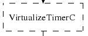 |
| Configuration | 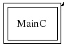 | 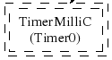 |
This lesson shows you how to compile a TinyOS program and install it on a mote, introduces the basic concepts and syntax of the TinyOS component model, and shows you how to generate and navigate TinyOS's source code documentation.
As a first exercise, you'll compile and install a very simple TinyOS application called Blink. If you don't have mote hardware, you can compile it for TOSSIM, the TinyOS simulator.
You compile TinyOS applications with the program make. TinyOS uses a powerful and extensible make system that allows you to easily add new platforms and compilation options. The makefile system definitions are located in tinyos-2.x/support/make.
The first step is to check that your environment is set up
correctly. Run the tos-check-env command:
$ tos-check-env
This script checks pretty much everything that the TinyOS environment needs. Most of the warnings should be somewhat self-explanatory, if you are at all accustomed to a UNIX environment. If you are having trouble with warnings, your best bet is to join and ask questions on the tinyos-help email list. It's almost always the case that if you've run into a problem, someone else has too. Searching the help archives can therefore be useful.
If your system says some command is not available, then
chances are you need to install the TinyOS tools (tos-*) RPM.
Please refer to your installation instructions. If you have
installed the RPM, then look in /usr/bin and /usr/local/bin
for tos-check-env. If you have downloaded from CVS rather than
used RPMs, then you need to compile and build the tools.
Go to tinyos-2.x/tools/tinyos and type:
$ configure $ make $ make install
On Linux systems, you will either need superuser abilities or
access to sudo for the last command.
The second thing to check is that you have the TinyOS build system enabled. This involves the MAKERULES environment variable. In a shell, type
printenv MAKERULES
You should see /opt/tinyos-2.x/support/make/Makerules. If your TinyOS tree is installed somewhere besides the standard place, you might not see /opt, but rather a different initial path. If MAKERULES is not set (printenv prints nothing), you need to set it. Depending on your shell, this involves using either export (bash) or setenv (csh, tcsh). If you don't know about shell environment variables, this tutorial should help.
The make command to compile a TinyOS application is
make [platform], executed from the
application's directory. To compile Blink, go the apps/Blink
directory and depending on which hardware you have, type make micaz,
make mica2, make telosb, or, for simulation, type
make micaz sim.
dark /root/src/tinyos-2.x/apps/Blink -4-> make telosb
mkdir -p build/telosb
compiling BlinkAppC to a telosb binary
ncc -o build/telosb/main.exe -Os -O -mdisable-hwmul -Wall -Wshadow
-DDEF_TOS_AM_GROUP=0x7d -Wnesc-all -target=telosb -fnesc-cfile=build/telosb/app.c
-board= BlinkAppC.nc -lm
compiled BlinkAppC to build/telosb/main.exe
2782 bytes in ROM
61 bytes in RAM
msp430-objcopy --output-target=ihex build/telosb/main.exe build/telosb/main.ihex
writing TOS image
If you compile for TOSSIM, you will see a much longer message, as building TOSSIM requires several steps, such as building shared libraries and scripting support.
If you are running Cygwin and see the error message "The procedure entry point basename could not be located in the dynamic link library cygwin1.dll" then you need to install the other Cygwin nesC RPM (step 4 of the install instructions or step 2 of the upgrade instructions)
If you see an error message along the lines of this:
BlinkAppC.nc:46: syntax error before `new' make: *** [exe0] Error 1
Then you are invoking an older version of the nesc compiler. Check by typing ncc --version. You should see:
ncc: 1.2.1 nescc: 1.2.6
Followed by some information on what version of the C compiler is being used. If you see different versions than those above, your compilation problems are most probably due to the fact that make is invoking the wrong version. This can easily happen if you are upgrading from TinyOS 1.x. You might have passed the tos-check-env because you have the right compiler on your system, but for some reason make is invoking the wrong one.
ncc is a script that invokes the full compiler, nescc. It lives in tinyos-2.x/tools/tinyos/ncc. If you've installed from an RPM, then the RPM put the new version of ncc in /usr/bin. You can see which version make is invoking by typing which ncc:
$ which ncc /usr/local/bin/ncc $ /usr/local/bin/ncc --version Unknown target mica Known targets for TinyOS directory /opt/tinyos-2.x/tos and the specified include directories are: none.
In this case, the version of ncc is so old that it doesn't even respond to the --version flag. In contrast,
$ /usr/bin/ncc --version ncc: 1.2.1 nescc: 1.2.5
The best solution to this problem is to move the old ncc to a different name (keep in around in case you need to go back to your old setup):
$ mv /usr/local/bin/ncc /usr/local/bin/ncc.old $ which ncc /usr/bin/ncc
You can apply the same process for nescc:
$ nescc --version ncc: 1.1.2 $ which nescc /usr/local/bin/nescc $ /usr/bin/nescc --version nescc: 1.2.5 $ mv /usr/local/bin/nescc /usr/local/bin/nescc.old $ which nescc /usr/bin/nescc
Now that we've compiled the application it's time to program the mote and run it. The next step depends on what family of mote you are programming.
This example uses a Mica2 mote and the serial-based programming board (mib510). Instructions on how to use other programming boards are here. To download your program onto the mote, place the mote board (or mote and sensor stack) into the bay on the programming board, as shown below. You can either supply a 3 or 5 volt supply to the connector on the programming board or power the node directly. The green LED (labeled PWR) on the programming board will be on when power is supplied. If you are using batteries to power the mote, be sure the mote is switched on (the power switch should be towards the connector). The ON/OFF switch on the mib510 board should normally be left in the OFF position. Only switch it to ON if you have problems programming the mote and when you are done programming, switch it back to OFF (when the switch is ON the mote cannot send data to the PC).
Plug the 9-pin connector into the serial port of a computer configured with the TinyOS tools, using a pass-through (not null-modem!) DB9 serial cable. If your computer does not have a serial port, you can easily obtain DB9-serial-to-USB cables.
| 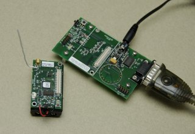 | 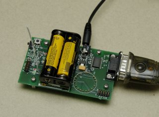 |
| Mica2 mote next to the programming board | Mica2 mote connected to the programming board |
Type:
make mica2 reinstall mib510,serialportwhere serialport is the serial port device name. Under Windows, if your serial port is COMn:, you must use /dev/ttySn-1 as the device name. On Linux, the device name is typically /dev/ttySn for a regular serial port and /dev/ttyUSBn or /dev/usb/tts/n for a USB-serial cable (the name depends on the Linux distribution). Additionally, on Linux, you will typically need to make this serial port world writeable. As superuser, execute the following command:
chmod 666 serialport
If the installation is successful you should see something like the following (if you don't, try repeating the make command):
cp build/mica2/main.srec build/mica2/main.srec.out
installing mica2 binary using mib510
uisp -dprog=mib510 -dserial=/dev/ttyUSB1 --wr_fuse_h=0xd9 -dpart=ATmega128
--wr_fuse_e=ff --erase --upload if=build/mica2/main.srec.out
Firmware Version: 2.1
Atmel AVR ATmega128 is found.
Uploading: flash
Fuse High Byte set to 0xd9
Fuse Extended Byte set to 0xff
rm -f build/mica2/main.exe.out build/mica2/main.srec.out
Telos motes are USB devices, and can be plugged into any USB port:
| 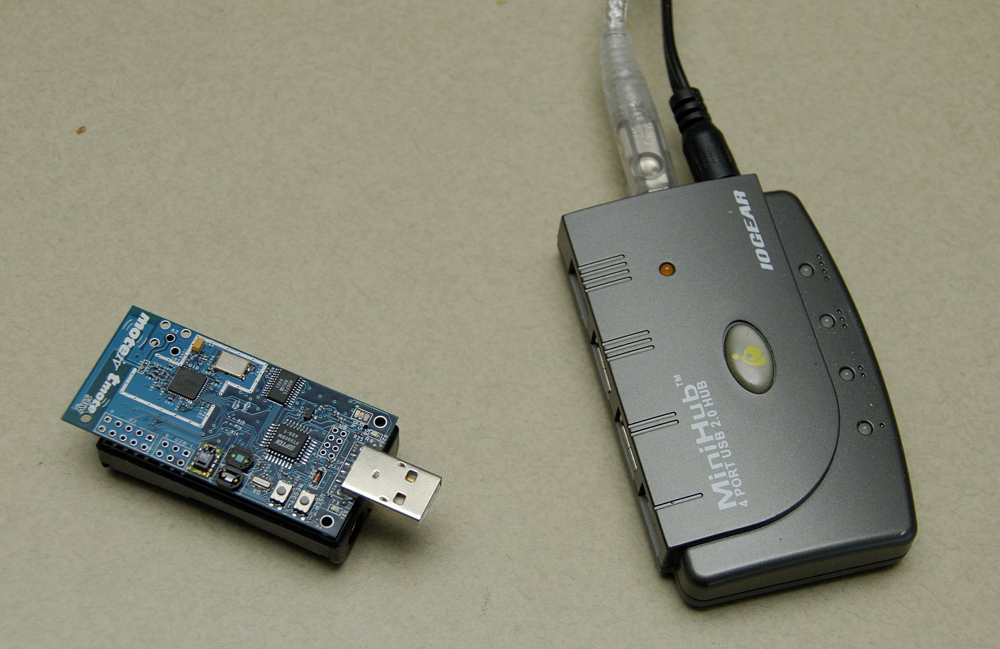 | 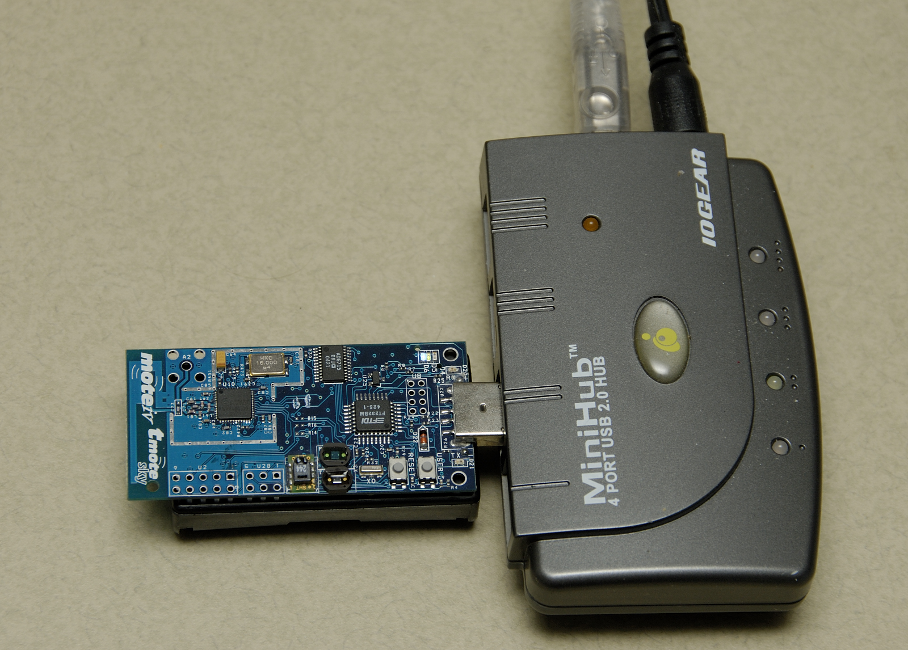 |
| Telos mote | Telos mote plugged into a USB port |
Because Telos motes are USB devices, they register with
your OS when you plug them in. Typing motelist
will display which nodes are currently plugged in:
$ motelist Reference CommPort Description ---------- ---------- ---------------------------------------- UCC89MXV COM4 Telos (Rev B 2004-09-27)
motelist tells you which ports have motes attached. Under Windows, it displays the mote's COM port (in this case 4), under Linux it displays just the USB serial port number (e.g., 2). Confusingly, the Windows version of the code installer (tos-bsl) takes the COM port number - 1 as it's argument (in this case 3); under Linux it takes the USB device name (e.g., /dev/ttyUSB2 or /dev/tts/usb/2 if motelist reports that the mote is device 2). On Linux, as with the mica programmers, you will typically need to make the USB serial port world writeable. As superuser, execute the following command:
chmod 666 usb-device-nameNow you can install the application using one of:
make telosb reinstall bsl,3 # Windows example make telosb reinstall bsl,/dev/ttyUSB2 # Linux example
This would compile an image suitable for the telosb platform and install it with a mote ID of 2 on a mote connected to COM4 on Windows or /dev/ttyUSB2 on Linux. If you have a single mote installed, you can skip the bsl and device name/number arguments. Again, see the Getting Started Guide for your chosen platform for the exact make parameters.
You should see something like this scroll by:
installing telosb binary using bsl
tos-bsl --telosb -c 16 -r -e -I -p build/telosb/main.ihex.out
MSP430 Bootstrap Loader Version: 1.39-telos-8
Mass Erase...
Transmit default password ...
Invoking BSL...
Transmit default password ...
Current bootstrap loader version: 1.61 (Device ID: f16c)
Changing baudrate to 38400 ...
Program ...
2782 bytes programmed.
Reset device ...
rm -f build/telosb/main.exe.out-2 build/telosb/main.ihex.out
There are different ways to program a TinyNode mote depending on how it is connected to your computer. The most common case is to connect it to a serial port using either the standard extension board (SEB) or the MamaBoard. (The other possible methods are to use a Mamaboard with a Digi Connect ethernet adaptor and program a node over the network, or to use a JTAG adaptor. These are not covered in this tutorial; please refer to the Tinynode documentation for further details.)
To install an application on a TinyNode mote using the serial port, enter the following command, taking care to replace /dev/ttyXXX with the file device corresponding to the serial port that the tinynode is plugged into.
make tinynode reinstall bsl,/dev/XXXAs with the telos and eyesIFX platforms, this command will reprogram your mote using the tos-bsl utility, and you will see similar output on your screen as given above for telos.
The eyesIFX motes have a mini-B USB connector, allowing easy programming and data exchange over the USB. The on-board serial-to-USB chip exports two separate serial devices: a lower-numbered one used exclusively for serial data communication, and a higher-numbered one used for programming of the microcontroller.
| 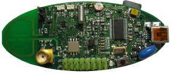 | 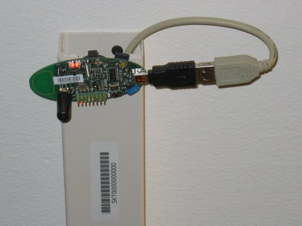 |
| eyesIFXv2 mote | eyesIFXv2 mote attached to a USB cable |
The actual programming is performed by the msp430-bsl script, conveniently invoked using the same make rules as for the telos motes. In the most basic form:
make eyesIFX install bsl
the install script defaults to programming using the /dev/ttyUSB1 device on Linux and COM1 on Windows, giving output similar to this:
installing eyesIFXv2 binary using bsl
msp430-bsl --invert-test --invert-reset --f1x -c /dev/ttyUSB1 -r -e -I -p build/eyesIFXv2/main.ihex.out
MSP430 Bootstrap Loader Version: 2.0
Mass Erase...
Transmit default password ...
Invoking BSL...
Transmit default password ...
Current bootstrap loader version: 1.61 (Device ID: f16c)
Program ...
2720 bytes programmed.
Reset device ...
rm -f build/eyesIFXv2/main.exe.out build/eyesIFXv2/main.ihex.out
The programming device can also be explicitly set as a parameter of the bsl command using shorthand or full notation:
make eyesIFX install bsl,USB3 make eyesIFX install bsl,/dev/ttyUSB3
The eyesIFX motes can be programmed over the provided JTAG interface with the help of the msp430-jtag script:
make eyesIFX install jtag
producing output as in the following:
installing eyesIFXv2 binary using the parallel port jtag adapter
msp430-jtag -Iepr build/eyesIFXv2/main.ihex.out
MSP430 parallel JTAG programmer Version: 2.0
Mass Erase...
Program...
2720 bytes programmed.
Reset device...
Reset and release device...
You can now test the program by unplugging the mote from the programming board and turning on the power switch (if it's not already on). With any luck the three LEDs should be displaying a counter incrementing at 4Hz.
The reinstall command told the make system to install the currently compiled binary: it skips the compilation process. Type make clean to clean up all of the compiled binary files, then type, e.g., make telosb install This will recompile Blink and install it on one action.
Networking almost always requires motes to have unique identifiers. When you compile a TinyOS application, it has a default unique identifier of 1. To give a node a different identifier, you can specify it at installation. For example, if you type make telosb install.5 or make telosb reinstall.5, you will install the application on a node and give it 5 as its identifier.
For more information on the build system, please see Lesson 13.
Now that you've installed Blink, let's look at how it works. Blink, like all TinyOS code, is written in nesC, which is C with some additional language features for components and concurrency.
A nesC application consists of one or more components assembled, or wired, to form an application executable. Components define two scopes: one for their specification which contains the names of their interfaces, and a second scope for their implementation. A component provides and uses interfaces. The provided interfaces are intended to represent the functionality that the component provides to its user in its specification; the used interfaces represent the functionality the component needs to perform its job in its implementation.
Interfaces are bidirectional: they specify a set of commands, which are functions to be implemented by the interface's provider, and a set of events, which are functions to be implemented by the interface's user. For a component to call the commands in an interface, it must implement the events of that interface. A single component may use or provide multiple interfaces and multiple instances of the same interface.
The set of interfaces which a component provides together with the set of interfaces that a component uses is considered that component's signature.
There are two types of components in nesC: modules and configurations. Modules provide the implementations of one or more interfaces. Configurations are used to assemble other components together, connecting interfaces used by components to interfaces provided by others. Every nesC application is described by a top-level configuration that wires together the components inside.
Let's look at a concrete example: Blink in the TinyOS tree. As you saw, this application displays a counter on the three mote LEDs. In actuality, it simply causes the LED0 to to turn on and off at .25Hz, LED1 to turn on and off at .5Hz, and LED2 to turn on and off at 1Hz. The effect is as if the three LEDs were displaying a binary count of one to seven every two seconds.
Blink is composed of two components: a module, called "BlinkC.nc", and a configuration, called "BlinkAppC.nc". Remember that all applications require a top-level configuration file, which is typically named after the application itself. In this case BlinkAppC.nc is the configuration for the Blink application and the source file that the nesC compiler uses to generate an executable file. BlinkC.nc, on the other hand, actually provides the implementation of the Blink application. As you might guess, BlinkAppC.nc is used to wire the BlinkC.nc module to other components that the Blink application requires.
The reason for the distinction between modules and configurations is to allow a system designer to build applications out of existing implementations. For example, a designer could provide a configuration that simply wires together one or more modules, none of which she actually designed. Likewise, another developer can provide a new set of library modules that can be used in a range of applications.
Sometimes (as is the case with BlinkAppC and BlinkC) you will have a configuration and a module that go together. When this is the case, the convention used in the TinyOS source tree is:
| File Name | File Type |
| Foo.nc | Interface |
| Foo.h | Header File |
| FooC.nc | Public Module |
| FooP.nc | Private Module |
While you could name an application's implementation module and associated top-level configuration anything, to keep things simple we suggest that you adopt this convention in your own code. There are several other conventions used in TinyOS; TEP 3 specifies the coding standards and best current practices.
The nesC compiler compiles a nesC application when given the file containing the top-level configuration. Typical TinyOS applications come with a standard Makefile that allows platform selection and invokes ncc with appropriate options on the application's top-level configuration.
Let's look at BlinkAppC.nc, the configuration for this application first:
configuration BlinkAppC {
}
implementation {
components MainC, BlinkC, LedsC;
components new TimerMilliC() as Timer0;
components new TimerMilliC() as Timer1;
components new TimerMilliC() as Timer2;
BlinkC -> MainC.Boot;
MainC.SoftwareInit -> LedsC;
BlinkC.Timer0 -> Timer0;
BlinkC.Timer1 -> Timer1;
BlinkC.Timer2 -> Timer2;
BlinkC.Leds -> LedsC;
}
The first thing to notice is the key word configuration, which indicates that this is a configuration file. The first two lines,
configuration BlinkAppC {
}
simply state that this is a configuration called BlinkAppC.
Within the empty braces here it is possible to specify uses
and provides clauses, as with a module. This is important to
keep in mind: a configuration can use and provide interfaces. Said
another way, not all configurations are top-level applications.
The actual configuration is implemented within the pair of curly brackets following the key word implementation . The components lines specify the set of components that this configuration references. In this case those components are Main, BlinkC, LedsC, and three instances of a timer component called TimerMilliC which will be referenced as Timer0, Timer1, and Timer2(1). This is accomplished via the as keyword which is simply an alias(2).
As we continue reviewing the BlinkAppC application, keep in mind that the BlinkAppC component is not the same as the BlinkC component. Rather, the BlinkAppC component is composed of the BlinkC component along with MainC, LedsC and the three timers.
The remainder of the BlinkAppC configuration consists of connecting interfaces used by components to interfaces provided by others. The MainC.Boot and MainC.SoftwareInit interfaces are part of TinyOS's boot sequence and will be covered in detail in Lesson 3. Suffice it to say that these wirings enable the LEDs and Timers to be initialized.
The last four lines wire interfaces that the BlinkC component uses to interfaces that the TimerMilliC and LedsC components provide. To fully understand the semantics of these wirings, it is helpful to look at the BlinkC module's definition and implementation.
module BlinkC {
uses interface Timer<TMilli> as Timer0;
uses interface Timer<TMilli> as Timer1;
uses interface Timer<TMilli> as Timer2;
uses interface Leds;
users interface Boot;
}
implementation
{
// implementation code omitted
}
The first part of the module code states that this is a module called BlinkCand declares the interfaces it provides and uses. The BlinkC module uses three instances of the interface Timer<TMilli> using the names Timer0, Timer1 and Timer2 (the <TMilli> syntax simply supplies the generic Timer interface with the required timer precision). Lastly, the BlinkC module also uses the Leds and Boot interfaces. This means that BlinkC may call any command declared in the interfaces it uses and must also implement any events declared in those interfaces.
After reviewing the interfaces used by the BlinkC component, the semantics of the last four lines in BlinkAppC.nc should become clearer. The line BlinkC.Timer0 -> Timer0 wires the three Timer<TMilli> interface used by BlinkC to the Timer<TMilli> interface provided the three TimerMilliC component. The BlinkC.Leds -> LedsC line wires the Leds interface used by the BlinkC component to the Leds interface provided by the LedsC component.
nesC uses arrows to bind interfaces to one another. The right arrow (A->B) as "A wires to B". The left side of the arrow (A) is a user of the interface, while the right side of the arrow (B) is the provider. A full wiring is A.a->B.b, which means "interface a of component A wires to interface b of component B." Naming the interface is important when a component uses or provides multiple instances of the same interface. For example, BlinkC uses three instances of Timer: Timer0, Timer1 and Timer2. When a component only has one instance of an interface, you can elide the interface name. For example, returning to BlinkAppC:
configuration BlinkAppC {
}
implementation {
components MainC, BlinkC, LedsC;
components new TimerMilliC() as Timer0;
components new TimerMilliC() as Timer1;
components new TimerMilliC() as Timer2;
BlinkC -> MainC.Boot;
MainC.SoftwareInit -> LedsC;
BlinkC.Timer0 -> Timer0;
BlinkC.Timer1 -> Timer1;
BlinkC.Timer2 -> Timer2;
BlinkC.Leds -> LedsC;
}
The interface name Leds does not have to be included in LedsC:
BlinkC.Leds -> LedsC; // Same as BlinkC.Leds -> LedsC.Leds
Because BlinkC only uses one instance of the Leds interface, this line would also work:
BlinkC -> LedsC.Leds; // Same as BlinkC.Leds -> LedsC.Leds
As the TimerMilliC components each provide a single instance of Timer, it does not have to be included in the wirings:
BlinkC.Timer0 -> Timer0; BlinkC.Timer1 -> Timer1; BlinkC.Timer2 -> Timer2;
However, as BlinkC has three instances of Timer, eliding the name on the user side would be a compile-time error, as the compiler would not know which instance of Timer was being wired:
BlinkC -> Timer0.Timer; // Compile error!The direction of a wiring arrow is always from a user to a provider. If the provider is on the left side, you can also use a left arrow:
Timer0 <- BlinkC.Timer0; // Same as BlinkC.Timer0 -> Timer0;
For ease of reading, however, most wirings are left-to-right.
Carefully engineered TinyOS systems often have many layers of configurations, each of which refines the abstraction in simple way, building something robust with very little executable code. Getting to the modules underneath -- or just navigating the layers -- with a text editor can be laborious. To aid in this process, TinyOS and nesC have a documentation feature called nesdoc, which generates documentation automatically from source code. In addition to comments, nesdoc displays the structure and composition of configurations.
To generate documentation for an application, type
make platform docs
You should see a long list of interfaces and components stream by. If you see the error message
sh: dot: command not found
then you need to install graphviz, which is the program that draws the component graphs.
Once you've generated the documentation, go to tinyos-2.x/doc/nesdoc. You should see a directory for your platform: open its index.html, and you'll see a list of the components and interfaces for which you've generated documentation. For example, if you generated documentation for Blink on the telosb platform, you'll see documentation for interfaces such as Boot, Leds, and Timer, as well as some from the underlying hardware implementations, such as Msp430TimerEvent and HplMsp430GeneralIO.
In the navigation panel on the left, components are below interfaces. Click on BlinkAppC, and you should a figure like this:
In nesdoc diagrams, a single box is a module and a double box is a configuration. Dashed border lines denote that a component is a generic:
| Singleton | Generic | |
| Module | |
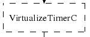 |
| Configuration | 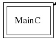 | 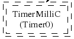 |
Lines denote wirings, and shaded ovals denote interfaces that a component provides or uses. You can click on the components in the graph to examine their internals. Click on MainC, which shows the wirings for the boot sequence:
Shaded ovals denote wireable interfaces. Because MainC provides the Boot interface and uses the Init (as SoftwareInit) interface, it has two shaded ovals. Note the direction of the arrows: because it uses SoftwareInit, the wire goes out from RealMainP to SoftwareInit, while because it provides Boot, the wire goes from Boot into RealMainP. The details of MainC aren't too important here, and we'll be looking at it in greater depth in lesson 3 (you can also read TEP 107 for details), but looking at the components you can get a sense of what it does: it controls the scheduler, initializes the hardware platform, and initializes software components.
This lesson has introduced the concepts of the TinyOS component model: configurations, modules, interfaces and wiring. It showed how applications are built by wiring components together. The next lesson continues with Blink, looking more closely at modules, including the TinyOS concurrency model and executable code.
(1) The TimerMilliC component is a generic component which means that, unlike non-generic components, it can be instantiated more than once. Generic components can take types and constants as arguments, though in this case TimerMilliC takes none. There are also generic interafces, which take type arguments only. The Timer interface provided by TimerMilliC is a generic interface; its type argument defines the timer's required precision (this prevents programmer from wiring, e.g., microsecond timer users to millisecond timer providers). A full explanation of generic components is outside this document's scope, but you can read about them in the nesc generic component documentation.
(2)
Programming Hint 10: Use the as keyword liberally. From
TinyOS Programming
< Top | Next Lesson >